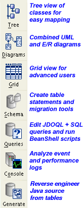

|
The Open Access Workbench is a powerful IDE for mapping your classes, reverse engineering Java source files from tables, monitoring Open Access servers and running JDOQL queries. To run JDOQL queries a Open Access server is started inside of the Workbench. The Workbench works in a similar way to a normal IDE: you edit meta data for your classes, compile the meta data, build the JDBC schema and run the Open Access server. |
The Workbench and Ant tasks use the properties file used to start a Open Access server as a project file (.properties extension). This file contains the database connection properties, the configuration of the Open Access Server, default meta data settings, the classpath for the project and so on. You can edit this by hand but it is usually easier to use the Workbench. Only one project may be open at a time (File | Open Project). You can edit project wide settings using File | Project & Datastore Properties.
|  |
The workbench needs to load and analyze your persistent classes. For this reason you should have classes compiled when using the Workbench. If you make changes and recompile your classes outside of the Workbench (e.g. using an IDE or Ant) then they need to be reloaded. The Workbench will automatically reload your classes when it is activated or you can choose File | Reload Classes to reload them manually. The workbench parses your .jdo meta data (mappings) in the background. If there are errors in the meta data then the compile meta data icon on the toolbar goes red. You can click the icon to open a wizard with the error message and help on how to fix the problem. The toolbar down the left hand side of the Workbench selects different views of your classes and activates other functionality (e.g. developing JDOQL queries). The buttons on the toolbar depend on the selected view. Open Access Links (these open in your external browser)
New releases Use Help | Introduction to redisplay this page |